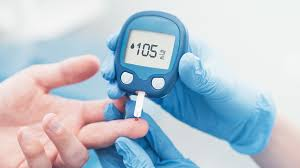
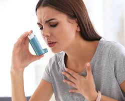
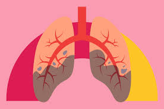
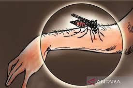

-
Influenza
Penjelasan: Influenza adalah infeksi virus yang menyerang sistem pernapasan.
Cara Sembuh: Istirahat, minum banyak cairan, dan konsumsi obat antivirus jika diperlukan.
Pencegahan: Vaksinasi tahunan dan menjaga kebersihan tangan.
-
Diabetes

Penjelasan: Diabetes adalah penyakit yang terjadi ketika kadar gula darah terlalu tinggi.
Cara Sembuh: Mengatur pola makan, rutin berolahraga, dan konsumsi obat sesuai anjuran dokter.
Pencegahan: Menjaga berat badan ideal, pola makan sehat, dan rutin berolahraga.
-
Hipertensi (Tekanan Darah Tinggi)
Penjelasan: Hipertensi adalah kondisi di mana tekanan darah di arteri terlalu tinggi.
Cara Sembuh: Mengubah gaya hidup, konsumsi obat penurun tekanan darah sesuai resep dokter.
Pencegahan: Pola makan rendah garam, rutin berolahraga, menjaga berat badan ideal, mengelola stres.
-
Asma

Penjelasan: Asma adalah penyakit kronis yang menyebabkan peradangan dan penyempitan saluran pernapasan.
Cara Sembuh: Menggunakan inhaler, menghindari pemicu asma, mengikuti rencana pengobatan dari dokter.
Pencegahan: Menghindari alergen dan iritan, menjaga kebersihan rumah, mendapatkan vaksin flu tahunan.
-
Tuberkulosis (TBC)

Penjelasan: Tuberkulosis adalah infeksi bakteri yang biasanya menyerang paru-paru.
Cara Sembuh: Mengonsumsi antibiotik selama jangka waktu yang ditentukan oleh dokter.
Pencegahan: Vaksin BCG, menghindari kontak dengan penderita TBC, menjaga kebersihan diri.
-
Malaria

Penjelasan: Malaria adalah penyakit yang disebabkan oleh parasit Plasmodium yang ditularkan melalui gigitan nyamuk Anopheles yang terinfeksi.
Cara Sembuh: Mengonsumsi obat antimalaria sesuai resep dokter.
Pencegahan: Menggunakan kelambu, memakai obat nyamuk, melakukan fogging, dan menghindari daerah endemik.
-
Hepatitis B
Penjelasan: Hepatitis B adalah infeksi virus yang menyerang hati dan dapat menyebabkan penyakit hati kronis.
Cara Sembuh: Menggunakan obat antivirus sesuai resep dokter, menjaga pola makan sehat.
Pencegahan: Vaksinasi hepatitis B, menghindari berbagi jarum suntik, praktik seks yang aman.
-
Demam Berdarah Dengue (DBD)
Penjelasan: DBD adalah penyakit yang disebabkan oleh virus dengue yang ditularkan melalui gigitan nyamuk Aedes aegypti.
Cara Sembuh: Istirahat, minum banyak cairan, mengonsumsi obat penurun demam dan pereda nyeri sesuai anjuran dokter.
Pencegahan: Menggunakan kelambu, memakai obat nyamuk, menjaga kebersihan lingkungan agar tidak ada genangan air yang bisa menjadi sarang nyamuk.